{kind=link}
{kind=link}
{kind=link}
{kind=link}
{kind=link}
{kind=link}
{kind=link}
{kind=link}
{kind=link}
Plant 1: succulent_jade
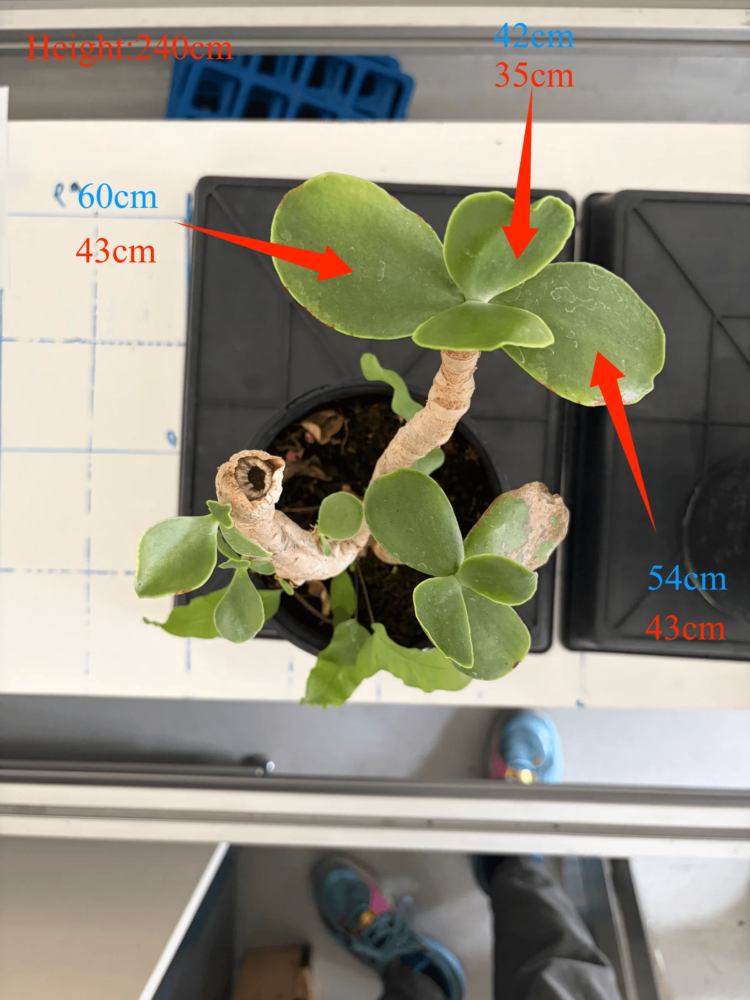


Selected automatic segments: #1 73.5 x 31.7 mm, #2 40.3 x 21.3 mm, #7 77.6 x 23.0 mm. Green contours show the selected scan segments. These IDs do not map to the manual photograph's leaf IDs.
Dataset: test_plant_20260828120800_best_lighting
This report compares the lab measurements with traits calculated from calibrated D405 RGB-D points for the same three plants.
The complete scene keeps the rails, board, pots, plants, and visible background. Full-resolution PLY (local computer only) · local scientific file | Lightweight sampled PLY · local scientific file
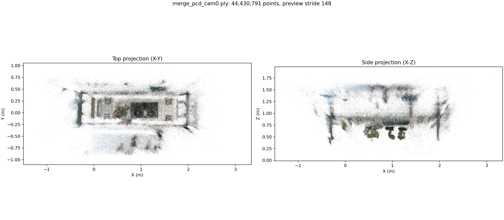
Software height is the configured soil/support depth minus the top one-percent plant depth. This avoids isolated depth spikes.
| Plant | Specimen | Manual | Software | Signed error | Absolute error |
|---|---|---|---|---|---|
| 1 | succulent_jade | 240.0 mm | 228.9 mm | -11.1 mm | 4.63% |
| 2 | coleus | 206.0 mm | 216.9 mm | 10.9 mm | 5.29% |
| 3 | fuzzy_kalanchoe | 217.0 mm | 217.0 mm | -0.0 mm | 0.00% |
These are direct comparisons for all nine annotated leaves. The software value is measured between matched landmarks in the calibrated RGB-D point geometry, using a robust local leaf-plane depth. The full 3D endpoint chord is retained in the machine-readable results as a diagnostic because leaf-edge depth can be contaminated by an overlapping leaf or the background.
Three annotated leaves matched. Length MAPE: 4.90%. Width MAPE: 11.82%.
| Matched leaf | Identity | Manual | Software point cloud | Difference | Error | Audit |
|---|---|---|---|---|---|---|
| Leaf 1 | manual upper-rosette left broad leaf | 60.0 mm | 66.1 mm | +6.1 mm | 10.1% | view leaf 1 |
| Leaf 2 | manual upper-rosette small upper leaf | 42.0 mm | 40.5 mm | -1.5 mm | 3.5% | view leaf 2 |
| Leaf 3 | manual upper-rosette right broad leaf | 54.0 mm | 54.5 mm | +0.5 mm | 1.0% | view leaf 3 |
| Matched leaf | Identity | Manual | Software point cloud | Difference | Error | Audit |
|---|---|---|---|---|---|---|
| Leaf 1 | manual upper-rosette left broad leaf | 43.0 mm | 41.5 mm | -1.5 mm | 3.4% | view leaf 1 |
| Leaf 2 | manual upper-rosette small upper leaf | 35.0 mm | 29.1 mm | -5.9 mm | 16.8% | view leaf 2 |
| Leaf 3 | manual upper-rosette right broad leaf | 43.0 mm | 36.5 mm | -6.5 mm | 15.2% | view leaf 3 |
Three annotated leaves matched. Length MAPE: 3.98%. Width MAPE: 2.23%.
| Matched leaf | Identity | Manual | Software point cloud | Difference | Error | Audit |
|---|---|---|---|---|---|---|
| Leaf 1 | manual left-facing central leaf | 95.0 mm | 91.7 mm | -3.3 mm | 3.5% | view leaf 1 |
| Leaf 2 | manual large upper-right leaf | 115.0 mm | 114.0 mm | -1.0 mm | 0.9% | view leaf 2 |
| Leaf 3 | manual right-facing central leaf | 104.0 mm | 96.1 mm | -7.9 mm | 7.6% | view leaf 3 |
| Matched leaf | Identity | Manual | Software point cloud | Difference | Error | Audit |
|---|---|---|---|---|---|---|
| Leaf 1 | manual left-facing central leaf | 68.0 mm | 69.0 mm | +1.0 mm | 1.5% | view leaf 1 |
| Leaf 2 | manual large upper-right leaf | 96.0 mm | 100.5 mm | +4.5 mm | 4.7% | view leaf 2 |
| Leaf 3 | manual right-facing central leaf | 84.0 mm | 84.4 mm | +0.4 mm | 0.4% | view leaf 3 |
Three annotated leaves matched. Length MAPE: 3.87%. Width MAPE: 2.28%.
| Matched leaf | Identity | Manual | Software point cloud | Difference | Error | Audit |
|---|---|---|---|---|---|---|
| Leaf 1 | manual left leaf | 35.0 mm | 36.3 mm | +1.3 mm | 3.7% | view leaf 1 |
| Leaf 2 | manual upper central lobed leaf | 35.0 mm | 34.2 mm | -0.8 mm | 2.2% | view leaf 2 |
| Leaf 3 | manual broad foreground leaf | 42.0 mm | 44.4 mm | +2.4 mm | 5.8% | view leaf 3 |
| Matched leaf | Identity | Manual | Software point cloud | Difference | Error | Audit |
|---|---|---|---|---|---|---|
| Leaf 1 | manual left leaf | 24.0 mm | 24.4 mm | +0.4 mm | 1.7% | view leaf 1 |
| Leaf 2 | manual upper central lobed leaf | 44.0 mm | 43.7 mm | -0.3 mm | 0.7% | view leaf 2 |
| Leaf 3 | manual broad foreground leaf | 40.0 mm | 38.2 mm | -1.8 mm | 4.5% | view leaf 3 |
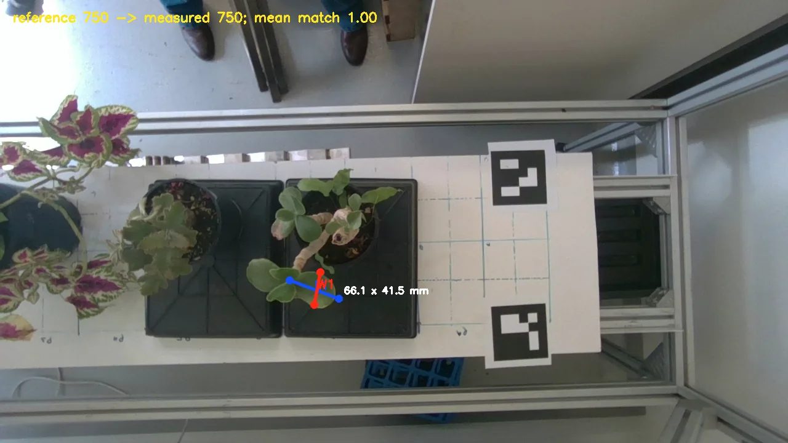
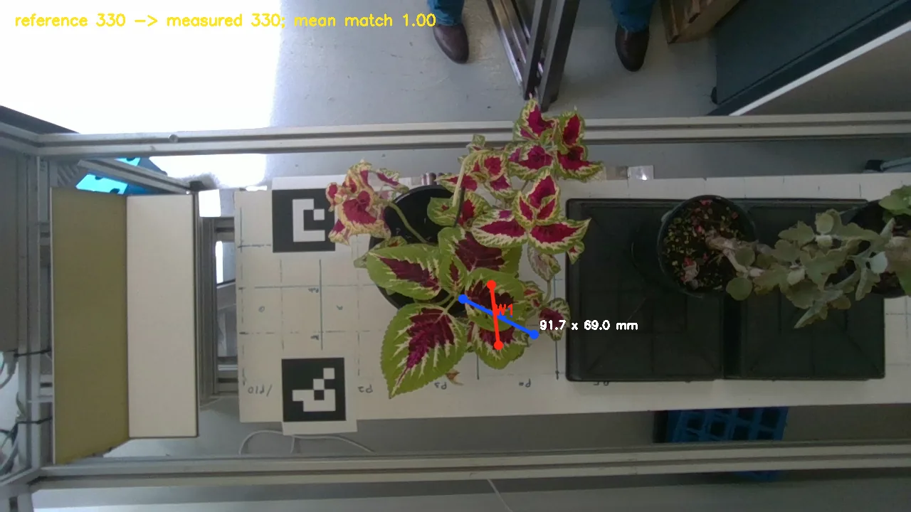
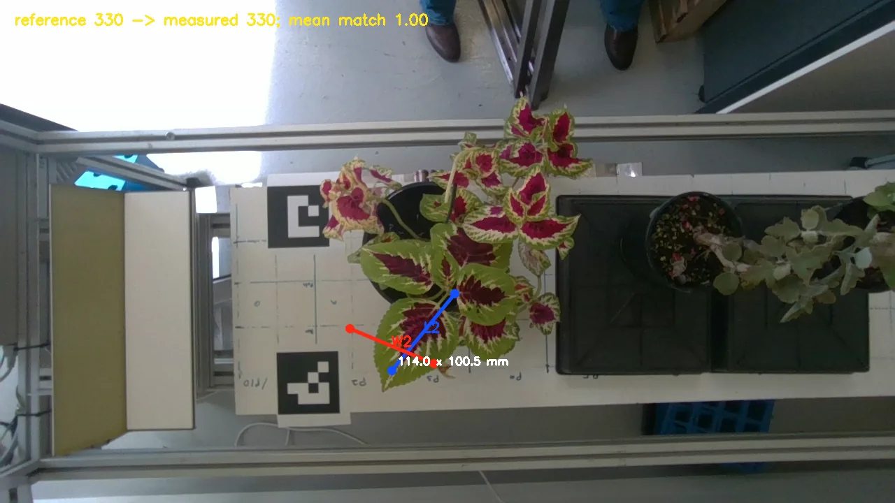
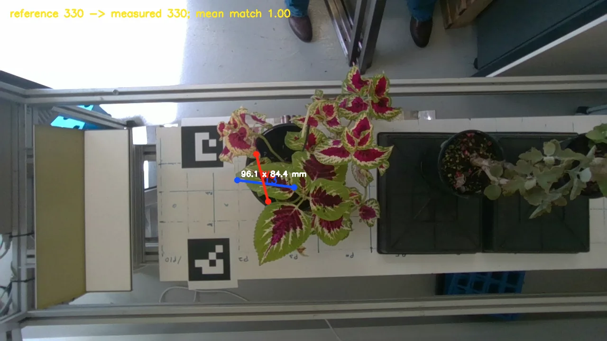
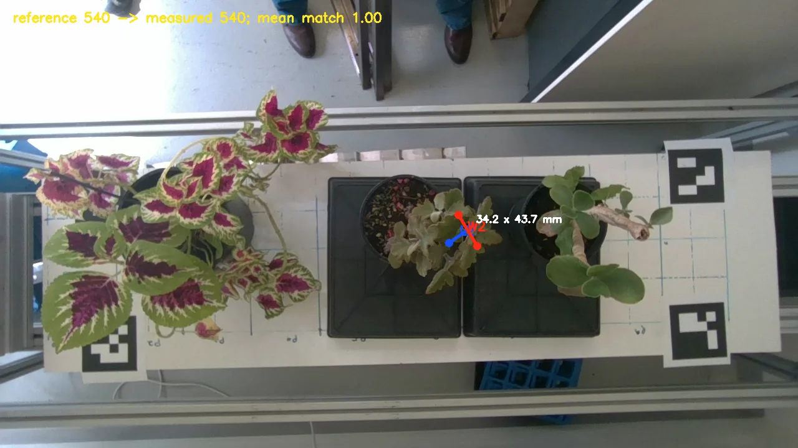
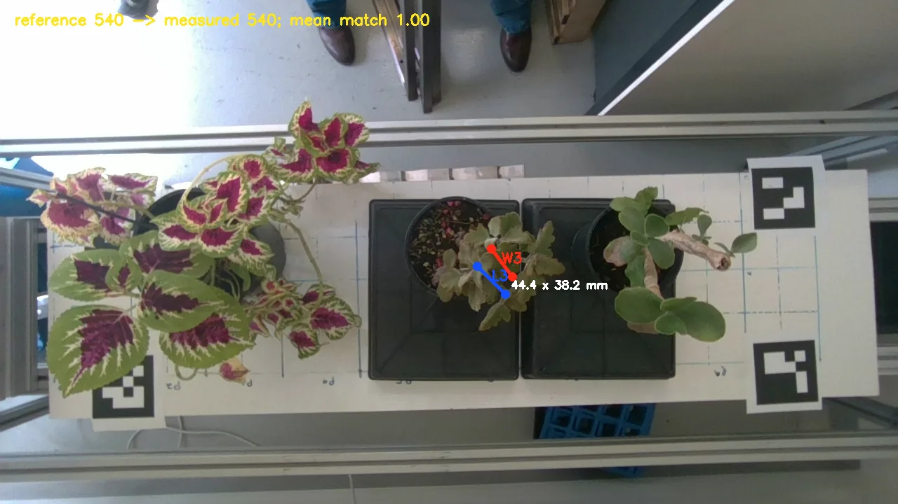
The table below is retained only to document the earlier watershed experiment. It compares aggregate segment means and does not establish leaf identity, so it is not used in the validation MAPE above.
| Plant | Specimen | Manual n | Software n | Manual length | Software length | Manual width | Software width | Length error | Width error | Status |
|---|---|---|---|---|---|---|---|---|---|---|
| 1 | succulent_jade | 3 | 3 | 52.0 mm | 63.8 mm | 40.3 mm | 25.3 mm | 22.7% | 37.2% | exploratory |
| 2 | coleus | 3 | 3 | 104.7 mm | 104.8 mm | 82.7 mm | 79.8 mm | 0.2% | 3.4% | exploratory |
| 3 | fuzzy_kalanchoe | 3 | 2 | 37.3 mm | 55.4 mm | 36.0 mm | 40.2 mm | 48.3% | 11.6% | insufficient segments |

Selected automatic segments: #1 73.5 x 31.7 mm, #2 40.3 x 21.3 mm, #7 77.6 x 23.0 mm. Green contours show the selected scan segments. These IDs do not map to the manual photograph's leaf IDs.
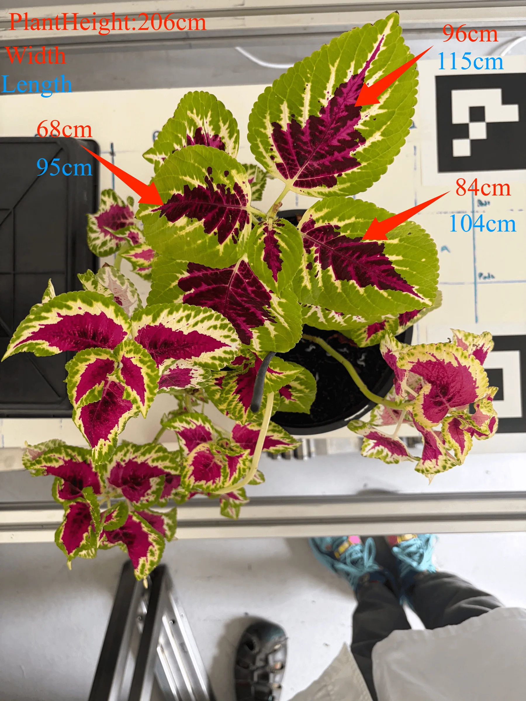
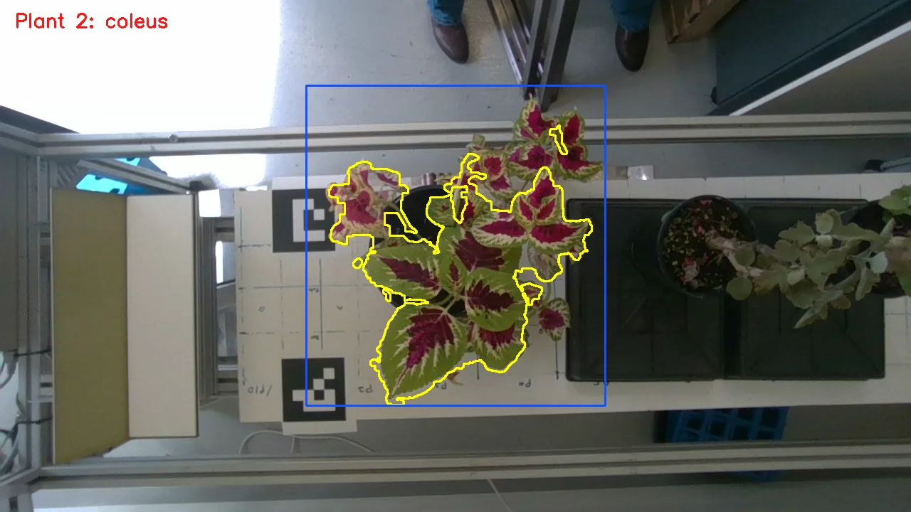

Selected automatic segments: #4 96.8 x 93.8 mm, #8 136.0 x 82.6 mm, #16 81.7 x 63.1 mm. Green contours show the selected scan segments. These IDs do not map to the manual photograph's leaf IDs.
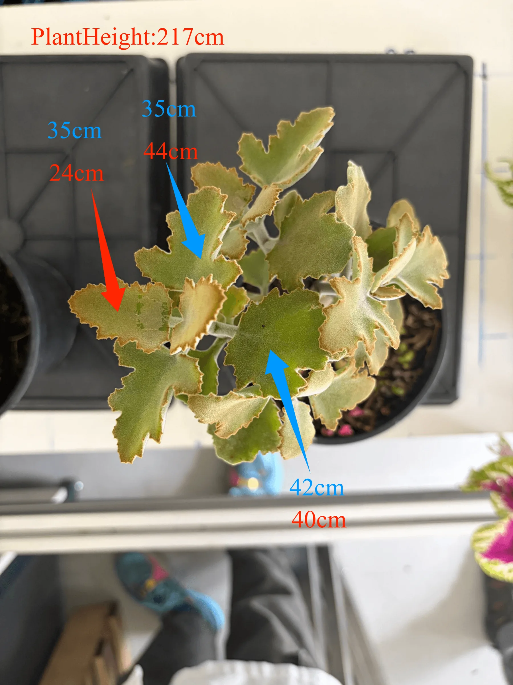
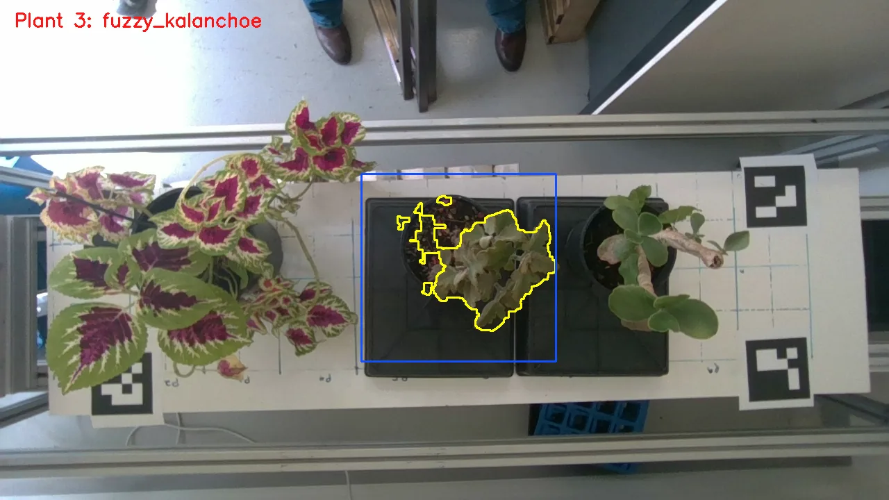
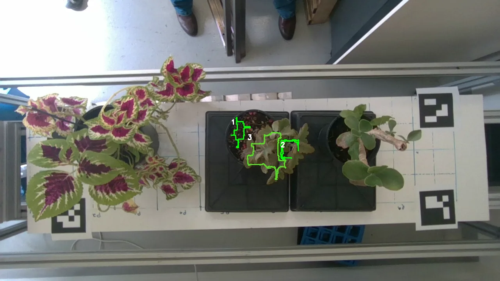
Selected automatic segments: #1 70.1 x 44.9 mm, #2 40.7 x 35.4 mm. Green contours show the selected scan segments. These IDs do not map to the manual photograph's leaf IDs.
The corrected D405 depth calibration supports plant-height and guided leaf-dimension validation. The scale follows the librealsense D405 default of 0.0001 m per raw unit. The leaf comparison demonstrates accuracy for these nine manually matched leaves; it does not yet prove that automatic leaf instance segmentation will generalise to every species or occlusion. Projected canopy area and convex-hull area are included in software_traits.csv, but no manual area reference was recorded in the supplied images, so they are not accuracy-scored here.